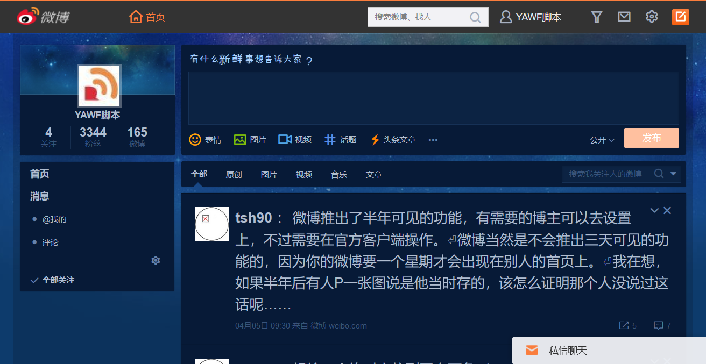
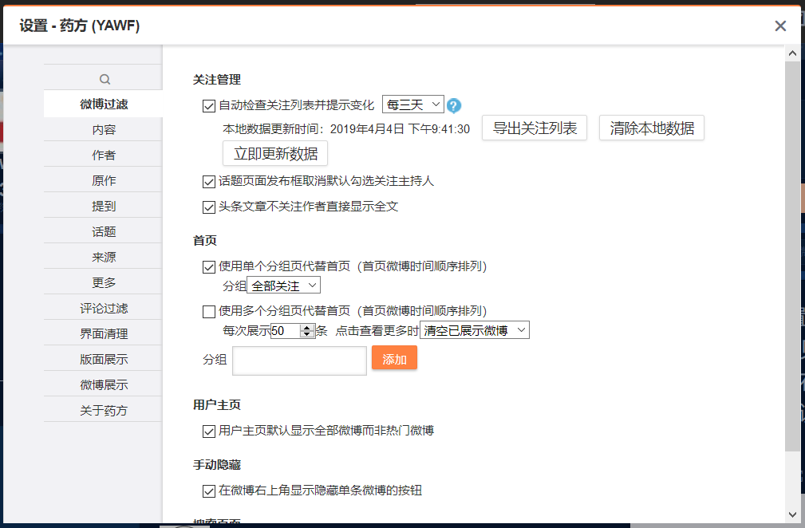
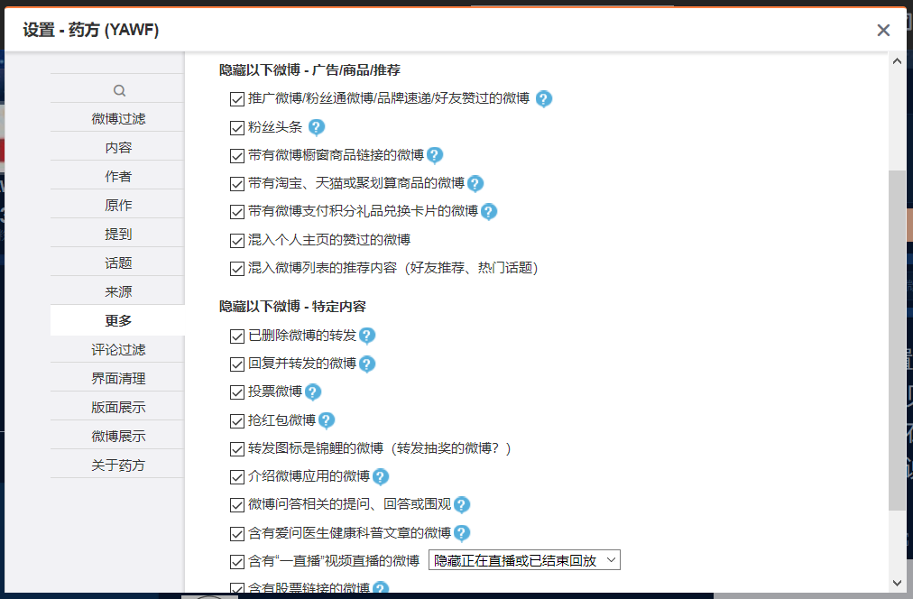
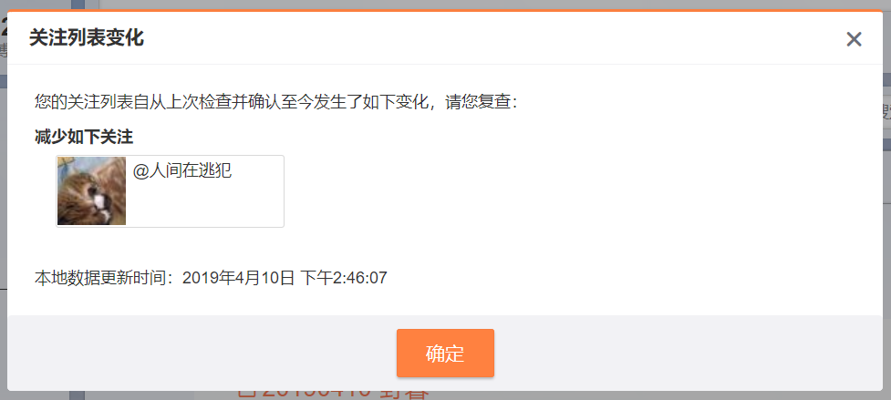
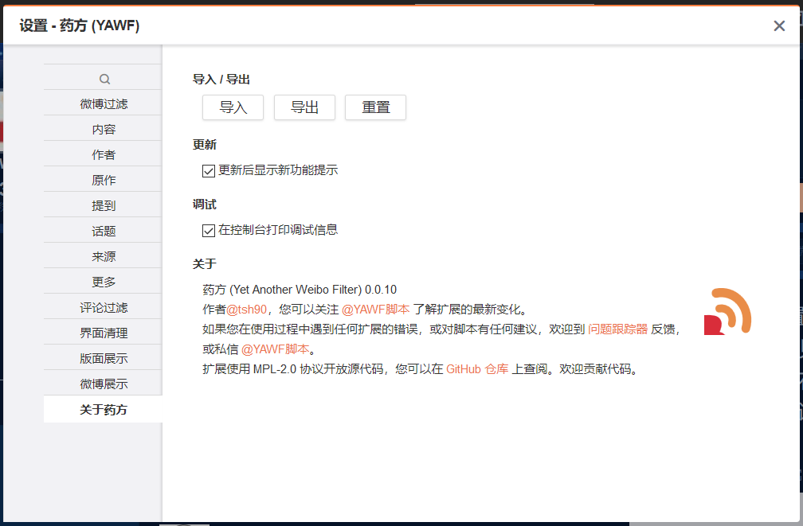

- 跳过微博的兴趣导引，避免误关注大量“垃圾帐号”（该功能默认开启，无设置项）；
- 根据关键字、作者、来源等隐藏、折叠或高亮微博；使用拖拽轻松定义过滤规则；
- 屏蔽推广、粉丝头条、投票、好友赞过、抢红包、爱问医生等各种微博；
- 清理版面上的各种模块、图标、小红点，去广告；过滤热门话题；
- 合并左右边栏的双栏模式，加宽微博宽度和加大微博字号，自定义字体；
- 去除微博间的空白，调整微博版式，重新安排微博下方按钮顺序
- 自动检查您的关注列表并告诉您发生的变化，帮您保持关注列表的干净整洁；
- 设置网页模板，自定义半透明背景色，深色导航栏，经典导航栏布局；
- 正常大小的微博缩略图尺寸，原生视频播放器；
- 以及更多功能……
如何安装

使用 Mozilla Firefox 浏览器的用户，推荐您安装扩展版以获得更好的效果。扩展版包括一些脚本版无法提供的功能，部分功能效果也会更好。
如需安装脚本版，您可以安装 Greasemonkey 油猴子 、 Violentmonkey 暴力猴 或 Tampermonkey 任一以使用脚本。
如果您已经安装了以上附加组件，点此安装本脚本，在弹出的页面中确认脚本安装。

使用 Google Chrome 的用户，您可以安裝 Tampermonkey 扩展程序 或 暴力猴 扩展程序 运行本脚本。
如果您已经安装了以上任一扩展程序，点此安装本脚本，在打开的页面中确认脚本安装。
脚本从未推出过 Chrome 扩展版本， Chrome 网上应用商店或其他来源的类似扩展与本脚本作者无关。这些扩展可能存在恶意行为，请多加小心。
如果您使用的是其他浏览器，您可以在您的浏览器的扩展中搜索 Greasemonkey 、 Tampermonkey 或 Violentmonkey （暴力猴）。安装对应的“猴子”后，点此安装本脚本。
脚本大部分功能应当可以在兼容 Chrome 扩展的浏览器配合 TM 或 VM ，兼容旧版 Firefox 扩展的浏览器配合 GM3，以及傲游浏览器配合 VM 等平台使用。
作者从未测试过对这些浏览器的支持，且不会保证脚本今后仍能在这些浏览器上使用。使用时也可能会遇到各类问题。且作者可能不会处理这些浏览器使用时遇到的问题。如果改动不是很大，仍然欢迎 Pull Request。
上述安装教程列出的浏览器“猴子”插件均为第三方的软件，与脚本作者没有任何关系。介绍这些插件仅为方便您安装和使用，脚本作者无法保证这些扩展的安全性与适用性，且不对这些插件的行为负责。每个扩展有自己的使用协议和隐私条款，安装前请分别确认。如果您不希望安装这些扩展，您还可以考虑安装 Firefox 扩展版。
如何使用
安装成功后，到新浪微博的页面点击右上角的漏斗图标 即可进入脚本设置。您也可以在右上角的设置菜单中找到“药方设置”菜单项，点击进入脚本设置。
您可以在“微博过滤”选项卡根据需要调整展示哪些微博，此外可以切换到“微博过滤 - 更多”隐藏掉各类您不想看到的微博。“界面清理”、“版面展示”、“微博展示”三个选项卡提供了对页面绝大多数元素的清理和自定义功能。
在浏览过程中，如果遇到某些您不喜欢的内容，选中并拖拽到右上角的拖放区域，即可快速创建规则，以免您今后再看到对应的内容。
脚本截图
- 
- 
- 
- 
- 
隐私与安全
- 脚本不会收集您的任何信息；脚本在使用过程中会根据需要访问微博服务器上的相关资源，此外不会进行其他网络访问；
- 脚本不会以您的名义发布微博，不会自动操作关注或取消关注，不会操作点赞或转发，也不会加入相关功能；